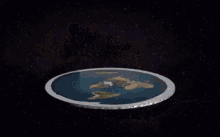
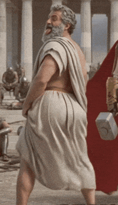
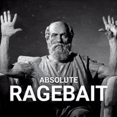
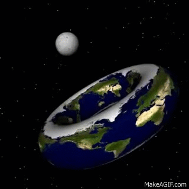
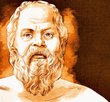
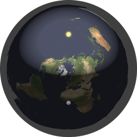
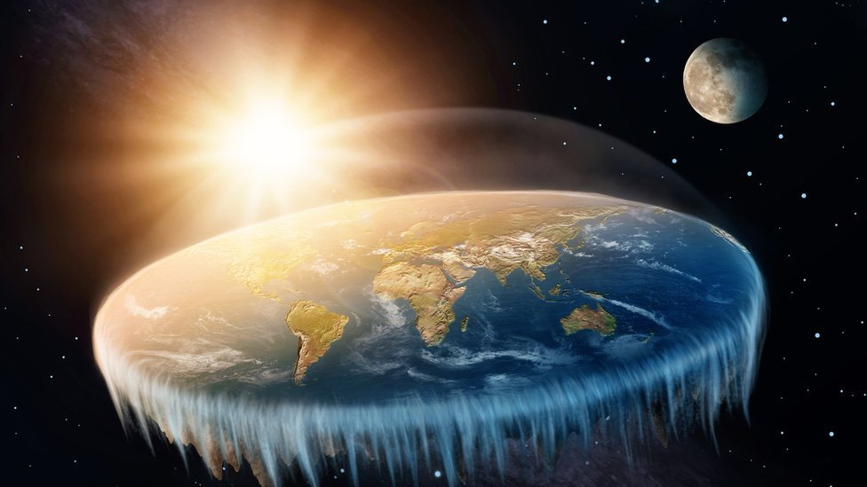
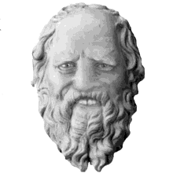
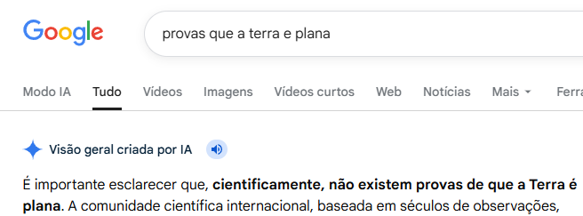

Oque seria a terra?
A Terra é um planeta que tem todos os outros corpos celestes em SUA ORBITA!Onde 100% da vida do sistema solar inteiro se encontra.
Modelo de Disco: A Terra é um disco plano e imóvel, não uma esfera giratória.O Domo (Firmamento): Acredita-se que o céu é um domo ou cúpula invisível que cobre o disco terrestre.Muralha de Gelo: A Antártida não é um continente no sul, mas sim uma muralha de gelo que circunda a borda do disco, impedindo que os oceanos vazem.O Sol e a Lua: Seriam menores e estariam muito mais próximos da Terra do que a ciência convencional afirma, movendo-se sobre a superfície plana.Negação da Gravidade: Terraplanistas frequentemente negam a gravidade, acreditando que as coisas caem devido à densidade e flutuabilidade, ou porque o disco está subindo constantemente.Conspiração Mundial: Acreditam que agências espaciais (como a NASA) e governos forjam fotos e vídeos do espaço para enganar a população.
Zeteteticismo: Filosofia que privilegia a observação sensorial direta em vez do método científico tradicional.Crença em Conspirações: A negação da ciência acumulada baseia-se na ideia de um grande complô para esconder a "verdadeira" forma da Terra.Popularidade na Internet: A teoria ganhou força a partir de 2014, impulsionada por redes sociais e vídeos.Visão de Mundo: Muitas vezes associada a crenças religiosas literais sobre a criação do mundo.
As pessoas acreditam que a Terra é redonda (ou, mais precisamente, um geoide esférico) porque essa é a única forma que se ajusta às evidências observáveis, experimentos científicos e registros visuais acumulados há milênios. A prova que eles seguem não é baseada em uma única fonte, mas em um conjunto de observações físicas que refutam a ideia de um plano
Sócrates (c. 470–399 a.C.) foi um filósofo grego fundamental,ALEM DE TER CIDO TERRA PLNISTA, considerado o "pai da filosofia ocidental". Ateniense, ele mudou o foco da filosofia do cosmos para o ser humano (ética e moral). Não deixou obras escritas, sendo conhecido pelos relatos de seus alunos, principalmente Platão. Foi condenado à morte por questionar as autoridades e valores de Atenas.








clique no texto acima para ver
PROVAS QUE O GOOGLE É DO SATANAS. O google espelha fake news🤮

VEJA SO A FOTO DE SOCRATES VAZADA NO ANO DE 1909
VEJA SO QUEM FOI DESCENDENTE DE SOCRATES